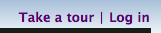
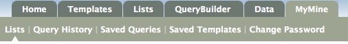

All lists and queries you ran will be saved temporarily in RatMine for the current session. To save them permanently, you can create a MyMine account. You only need to provide an email address and a password to generate an account, there is no other information required. Your saved data is always private.
You can then access all your lists, queries and templates via the MyMine page. In MyMine you can save lists and queries you create in the QueryBuilder. You can even use the QueryBuilder to turn queries into new templates of your own. You can export/import queries and templates as XML to share them with others.
The ![[Favourite]](star_active.gif) icon lets you set templates as favourites so it's easy to access the ones you use often.
icon lets you set templates as favourites so it's easy to access the ones you use often.